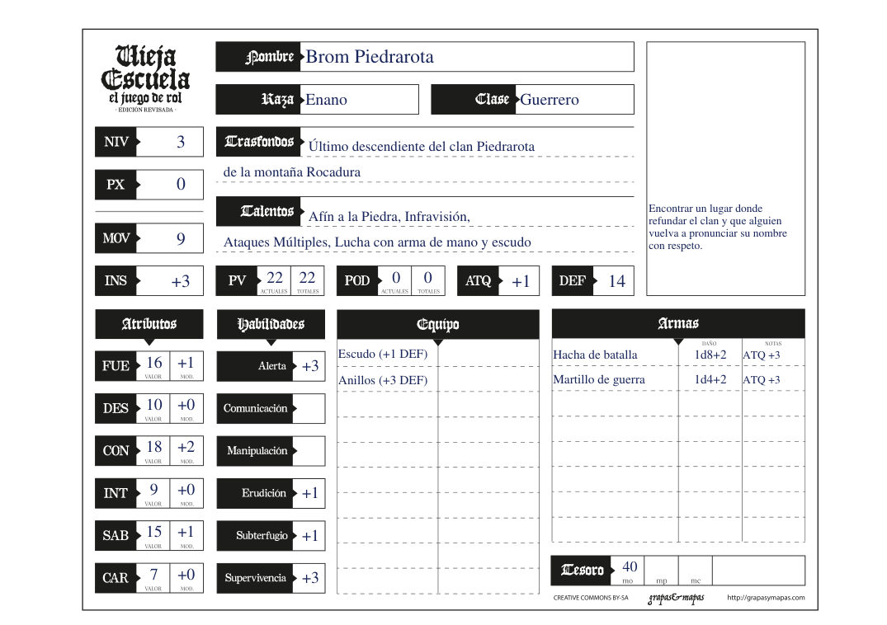
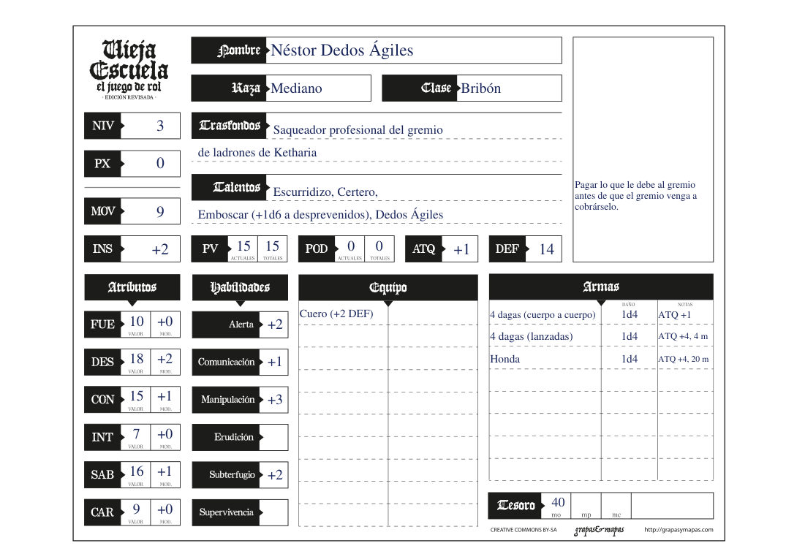
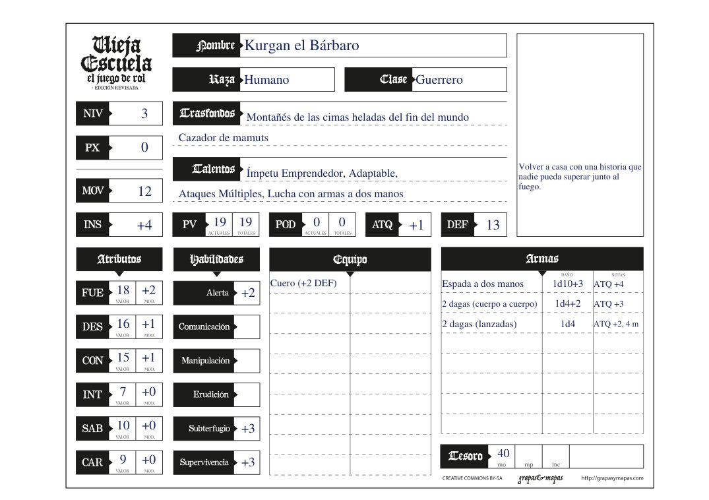
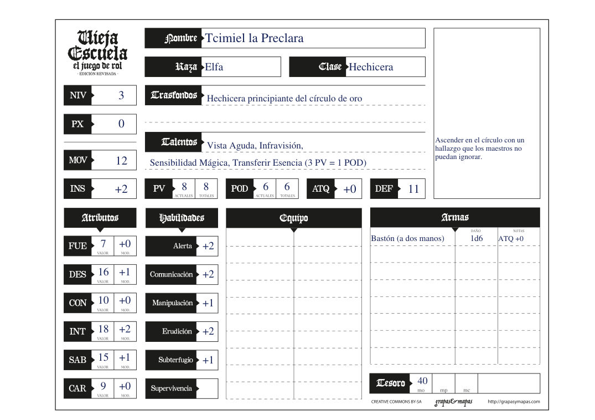

La Bestia de Farton · fichas en PDF rellenable
Los cuatro son de Nivel 3, sobre la hoja de Vieja Escuela: el juego de rol en A5 apaisado. Se pueden editar con el navegador o con cualquier lector de PDF. Para imprimir dos en un folio, elige «2 páginas por hoja» al imprimir.
Las cuatro fichas en un archivo · Ficha en blanco · Crear un personaje propio (el asistente permite empezar en Nivel 3)




Hoja de personaje de Vieja Escuela: el juego de rol (grapas&mapas, CC BY-SA 4.0), recortada a una sola ficha y con campos de formulario. Personajes de La Bestia de Farton (Iñaki Raya), recalculados con la edición revisada del manual y con una ambición añadida.